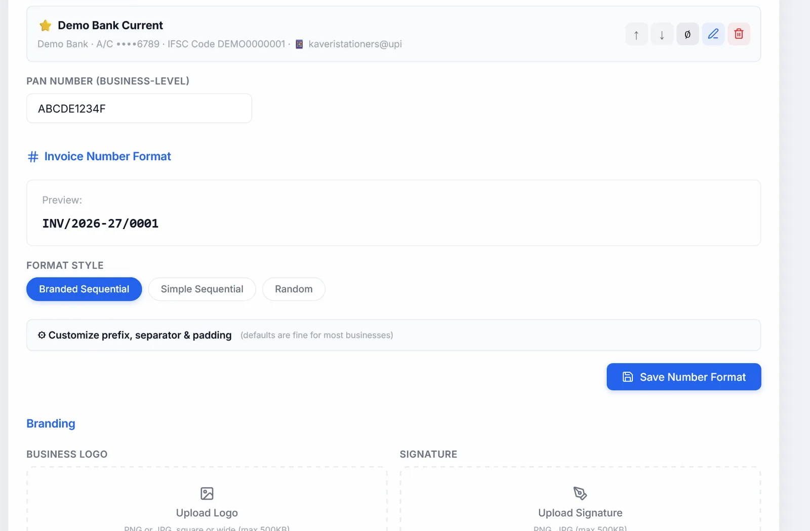

Settings
Every section of Settings, in the order it appears: your business, bank accounts, invoice numbers, logo and stamp, more than one business, terms, features, stock alerts, region, app lock, backups, Google Drive, import and export, and updates.
#Saving your changes
The section buttons stay at the top of Settings as you scroll: each jumps straight to its section, and the one you are reading is highlighted. At the bottom, one bar saves the whole page. It shows ✓ All changes saved, or, in amber, which sections have unsaved changes, with Discard to undo them all and Save all changes to save them all in one click.
Not everything waits for a Save. Save all changes covers every section in the last two columns:
| Saves by itself as you change it | Has its own Save button | Needs Save Profile |
|---|---|---|
| Payment accounts, Modules, Region, App lock | Invoice number format, Low-stock alerts, Terms templates | Company details, PAN, logo, signature, stamp, GSTR filing details, Google Drive fields |
The row of buttons under the title jumps to each section.
#Company details
The header of every invoice.
| Field | What to know |
|---|---|
| Business Name | Required |
| Country | India to start. The list follows your Region. |
| Address, City, PIN Code | |
| State | The one to get right: it decides whether GST is split into CGST and SGST or charged as IGST |
| GSTIN | Warns if the format looks wrong. The label changes for other countries, such as VAT or TRN. |
| Email, Phone |
#GSTR filing details
Indian businesses only, and only used in the GSTR-1 and GSTR-3B files. All optional.
- Aggregate turnover (AATO) is above ₹5 crore: tick it if so. HSN codes then need 6 digits instead of 4.
- Previous FY aggregate turnover and Current FY turnover so far, in rupees. You can also change these on the portal while filing.
#Bank accounts and UPI
Add as many bank and UPI accounts as you like with + Add account. Each account has:
| Field | What to know |
|---|---|
| Label | Your name for it, such as "HDFC Current - 1234" |
| Account Holder Name | Leave blank to use your business name |
| Bank Name, Account Number | |
| Account Type | Optional: Savings, Current, Cash Credit, Overdraft, NRE or NRO |
| IFSC Code | Or the local bank code outside India |
| SWIFT / BIC | Optional, for payments from abroad |
| UPI ID | Optional. With one, rupee invoices using this account carry a QR code the client can scan to pay the exact amount. |
| Internal notes | Never printed |
| Set as default | The ⭐ account is used on new invoices |
In the list, each account has buttons to make it the default (⭐), move it up or down, switch it off or on, edit and delete it. Switched-off accounts are not offered on new invoices. Deleting one never changes invoices already made with it: they keep the bank details they were saved with.
Pick a different account for one invoice under Customize.
PAN Number, below the accounts, prints in the bank details block. It needs Save Profile.
If you set up bank details in an older version, a banner offers Import & continue to turn them into your first account.
#Invoice number format
The preview at the top shows exactly how the next number will look.
| Branded Sequential | PREFIX/2026-27/0001, with the financial year. The default. |
| Simple Sequential | PREFIX/0001 |
| Random | PREFIX/A3X9K2 |
Start numbering from lets tax invoices carry on from your paper bill book: enter 1001 and the next tax invoice is .../1001, then 1002 and so on. When you save, the app shows the new next number and asks you to confirm, because numbers never go back down. If you have already gone past it, numbering simply continues; a number already used is never given again. Quotations, challans, credit notes, other types and receipts keep their own count. The preview at the top shows the real next tax invoice number.
16 characters at most. GST allows invoice and credit note numbers of up to 16 characters (letters, digits, - and /), and GSTR-1 refuses longer ones. If a prefix, year and number together would be longer, Settings says so in red and will not save; use a shorter prefix, the short year, or fewer digits.
More than one business? Each can number on its own. With the business selected in the sidebar, choose Own numbering for this business, give it a prefix of its own (such as its initials, KS) and, if you like, a start number, then Save Number Format. Its invoices then run KS/26-27/0502, 0503... whatever the other businesses do (it starts with the short year, so its credit notes, KS-CN/26-27/0001, fit the 16 characters). Its receipts follow its numbering too, and it keeps its numbering when you change its name or add its GSTIN. The prefix must differ from every other business's, because two invoices can never share a number. Shared numbering puts a business back on the shared series; invoices it already made keep their numbers.
Shared numbering is used by every business that has no numbering of its own, so changing it changes all of them. Settings names those businesses ("Shared by Firm 1, Firm 2…"), and saving a change asks first: Change numbering for all 2 businesses?
Under ⚙ Customize prefix, separator & padding:
- Brand Prefix: up to 10 capital letters and digits, such as ACME. Tax invoices print it alone (
ACME/2026-27/0001); every other document adds its type (ACME-QUO/...,ACME-DC/...,ACME-CN/...), because each type keeps its own count. Leave it empty to use each type's own prefix: INV, QUO, EST, BOS, COMP, CN and DC. - Separator:
/,-or#. - Include Financial Year: yes (
2026-27), short (26-27) or no. - Number Padding: 3 to 6 digits, such as 0001.
Click Save Number Format. Each document type keeps its own count. A type can also have its own prefix in Print Settings.

#Logo, signature and stamp
Upload each one separately. Any image up to 5 MB works; large images are made smaller for you. A signature or stamp on a transparent PNG looks best. Each has a size slider: logo 24 to 80 pixels high, signature 30 to 110, stamp 30 to 120.
Click Save Profile to keep them. The signature and stamp print side by side above the signatory's name, and on a long invoice they always move to the next page together rather than being split.
A photo from an iPhone in HEIC format may not open; share it as JPEG first.
#More than one business
If you run more than one business, each gets its own profile with its own GSTIN, bank accounts, logo and signature, and its own books. Invoices, totals, purchases, expenses, receipts, recurring invoices, reports and GST returns all follow the business selected at the top of the sidebar.
- + Add New Profile saves the business on screen to the list, then clears the form for the new one. Fill it in and click Save Profile.
- Save as Profile saves the form into the list, or updates the entry with the same name.
- Switch on a card changes business. The current one is saved first.
- Deleting a profile only removes it from the list. Its invoices stay.
Your client list is shared by all businesses. Records made before you had several businesses show under all of them until you assign them.
#Terms and conditions templates
Keep the terms you use as templates, then pick one on each invoice.
- Quick Start: one click adds a ready-made set for Services, Goods, Manufacturing and Trading, Export, or Freelancer.
- + New Template: give it a name and paste your terms.
Deleting a template does not change invoices that used it.
#Print and PDF settings
The app-wide look of every invoice has its own page: Print and PDF settings.
#Turning features off
Untick anything you do not use, and it disappears from the sidebar and forms. Your data is kept, and ticking it again brings it all back.
| Group | Features |
|---|---|
| Sales & Invoicing | Invoices (always on), Recurring invoices, Payment receipts |
| Directory | Clients (always on), Products & Services |
| Purchases & Expenses | Expense tracker, Purchase bills, GSTR-2B reconciliation |
| GST & Tax (India) | GSTR-1 / GSTR-3B, E-Way Bill, TDS / TCS on invoices (off to start), Income Tax Helper |
| Reports | Dashboard (always on), Reports |
| Integrations | Google Drive backup, UPI QR code on invoices |
🇮🇳 marks features that only apply in India. They are hidden when Region is International. Reset to default puts every feature back as it was on install.
#Low-stock alerts
Show low-stock alerts is on to start. Set the threshold with a chip, 0, 3, 5 (recommended) or 10, or type a number, then click Save. With alerts off, stock is still counted; you are just not warned.
#Region
| 🇮🇳 India only | GST, rupees first, GSTR-1 and 3B, e-way bill, UPI QR |
| 🌍 International | VAT and other tax names, several currencies, no India-only features |
| 🌐 Both / Auto | All countries, chosen per invoice. The default. |
It saves as soon as you click, and changes the country lists and which features you see. Your data is not touched.
Region, Print settings and your other display choices are also kept in the app's data folder, so they come back even if the browser clears its saved data.
#App lock (PIN)
For a computer other people also use. Turn on PIN lock, choose 6 or 8 digits, type the PIN twice and click Save PIN. From then on the app asks for it each time it is opened. It is off to start.
- Lock now locks the app straight away, when you step away. So do Lock on the Dashboard, Lock app in the sidebar and Ctrl + Shift + L anywhere. Anything you were typing is still there after you unlock.
- Change PIN and Turn off need the current PIN.
- After five wrong tries in a row, wait 30 seconds before the next.
It locks the screen only; it does not encrypt your files. Keep your backups safe as before. Backup files never contain the PIN, and restoring a backup keeps the PIN you have now.
Forgot the PIN? Open the Free-GST-Billing folder (where you start the app), make a new text file there named RESET-PIN, and reload the app. The PIN is removed and the file deleted. Your invoices are not touched.
#Daily backups and the trash bin
Settings lists the automatic daily backups, with Backup now, Restore and Delete, and the trash bin for deleted invoices. See Automatic daily backups and Trash.
#Google Drive
The easy way: install Google Drive for Desktop, sign in, and move the app's Saved Invoices folder into your Drive, or set it to sync. Every PDF you download is then in your Drive, on any device. No setup in the app is needed.
Direct upload, under Advanced, is for people comfortable with Google Cloud: it needs a Google OAuth Client ID of your own. Enter it and a folder name, click Save Profile, then Connect Google Drive. After that, Save & Download uploads each invoice PDF, and a backup can be saved to Drive when exporting.
#Import and export (Data Management)
Export Backup… and Import Backup… move your data in and out as one file. See Export everything to one file.
#Updates
Check for Updates shows your version and the latest. If there is a newer one, Update Now backs up your data and installs it; reload the page when it finishes. See Updating.